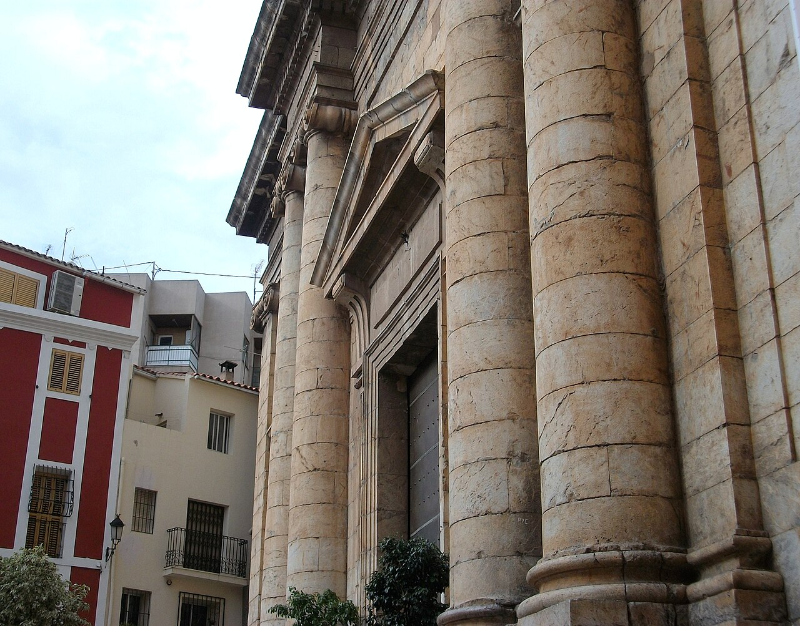
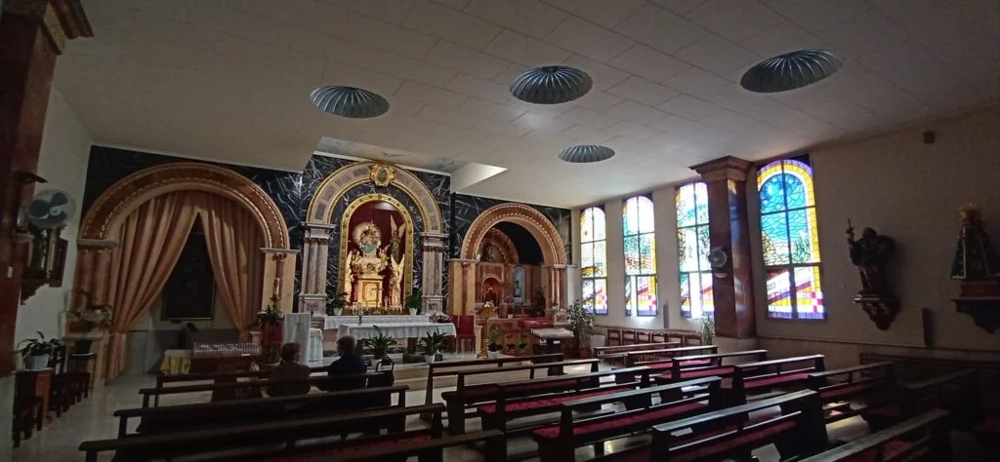
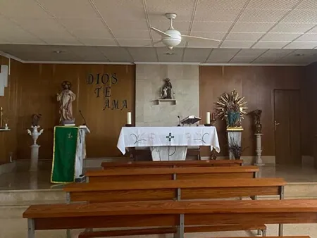
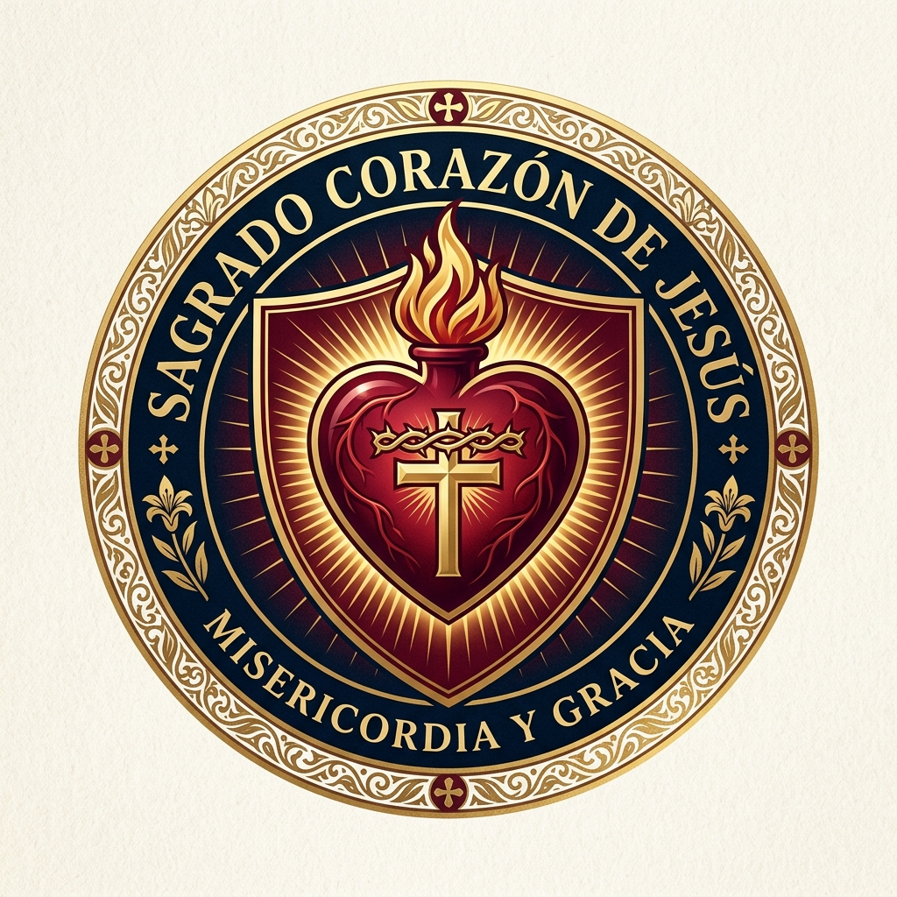
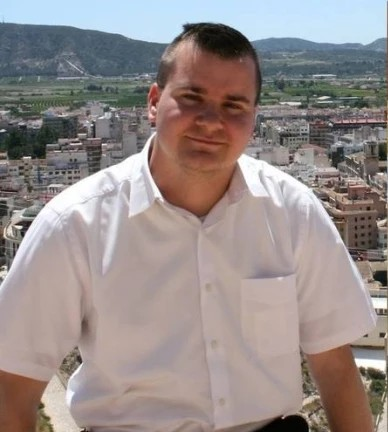

Sede parroquial
Iglesia San Juan Bautista
Plaça d'Espanya, 10 · 03510 Callosa d'en Sarrià| Misa los Sábados | 19:30 h |
| Misas los Domingos | 9:30 h y 11:00 h |

Consulta los horarios de misa, pastoral, grupos de formación y cómo llegar a cada templo.
| Misa los Sábados | 19:30 h |
| Misas los Domingos | 9:30 h y 11:00 h |

| Misa (Lunes, miércoles y jueves) | 19:30 h |
| Misa (Martes y viernes) | 09:30 h |

| Misa entre semana | 08:30 h |

Horario habitual de las tres sedes, salvo modificaciones por fiestas patronales, Semana Santa o cualquier otro motivo puntual.
Grupos de catequesis, formación, vida comunitaria y acompañamiento en la fe para niños, jóvenes y adultos.
Primer curso de preparación para recibir por primera vez el Sacramento de la Eucaristía.
Continuación del camino catequético y profundización sacramental para 2º y 3º curso.
Formación de jóvenes para la reafirmación de la fe y recepción del don del Espíritu Santo.
Grupo de formación y acompañamiento continuo en la fe tras recibir la Primera Comunión para niños y adolescentes.
Alpha es una oportunidad para explorar la fe cristiana en un ambiente relajado, cercano y abierto. Cada sesión incluye una merienda, una charla y un tiempo de conversación donde compartir libremente. Empezará el 6 de noviembre.
Con aquellos adultos que se quieran confirmar (horario a convenir), se realizará un curso de formación para recibir el sacramento de la confirmación.
Dirigido a aquellos adultos que quieren formarse, vivir y compartir la fe. Se formarán equipos de vida (horario a convenir), donde podamos compartir la fe y crear un espacio de amistad y fraternidad.
Servicio de acogida, atención social, ayuda a las familias necesitadas y promoción de la caridad y solidaridad en la comunidad de Callosa d'en Sarrià.
Todas las semanas hay un equipo de personas que llevan la comunión a aquellos que no pueden salir de sus casas. Si usted quiere recibir la comunión, puede comunicarlo en la parroquia y con mucho gusto nos acercaremos a llevarle la comunión.
Hermandades y cofradías de gran tradición y devoción popular vinculadas a la vida parroquial de Callosa d'en Sarrià.

Cofradía dedicada a la veneración y custodia del culto a la Mare de Déu de les Injúries, foco de profunda devoción popular en su capilla y barrio histórico.

Cofradía dedicada a la advocación y festividad de la Virgen del Cisne, promoviendo la fraternidad, la vida comunitaria y la fe viva en Callosa d'en Sarrià.

Cofradía dedicada a la devoción, culto y espiritualidad del Sagrado Corazón de Jesús en la parroquia San Juan Bautista de Callosa d'en Sarrià.
Al servicio espiritual y pastoral de Callosa d'en Sarrià.
